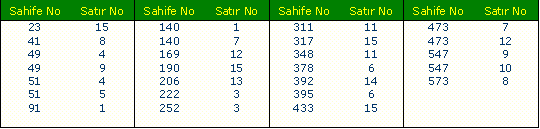

|
1.Nükte: Mecmu Kur'an |
  
|
|
1.Nükte: Mecmu Kur'an |
|
Birinci Nükte
Lafzullâh mecmu' Kur'an'da 2806 defa zikredilmiþtir. Bismillâh'dakilerle beraber lafz-ý Rahman 159 defa, Lafz-ý Rahim 220, Lafz-ý Gafur 61, lafz-ý Rab 846, Lafz-ý Hakim 86, Lafz-ý Alim 126, Lafz-ý Kadir 31, لاَۤ إِلٰهَ إِلاَّ هُوَ deki هُوَ 26 defa zikredilmiþtir. (Haþiye)
Lafzullâh adedinde çok esrar ve nükteler var. Ezcümle: Lafzullâh ve Rab'dan sonra en ziyade zikredilen Rahman, Rahim ve Gafur ve Hakim ile beraber Lafzullâh, Kur'an âyetlerinin nýsfýdýr. Hem Lafzullâh ve Allah lafzý yerinde zikredilen lafz-ý Rab ile beraber, yine nýsfýdýr. Çendan Rab lafzý 846 defa zikredilmiþdir. Fakat dikkat edilse; beþyüz küsürü Allah lafzý yerinde zikredilmiþ, ikiyüz küsürü öyle deðildir. Hem Allah, Rahman, Rahim, Alim ve لاَۤ إِلٰهَ إِلاَّ هُوَ deki هُوَ adediyle beraber, yine nýsfýdýr. Fark yalnýz dörttür, هُوَ yerinde "Kadir" ile beraber, yine mecmu' âyâtýn nýsfýdýr. Fark dokuzdur. Lafz-ý Celâlin mecmuundaki nükteler çoktur. Yalnýz þimdilik bu nükte ile iktifa ediyoruz.
Kur'anda لاَۤ إِلٰهَ إِلاَّ هُوَ deki هُوَ Listesi

---------------------------------
Haþiye: Kur'andaki âyâtýn mecmu' adedi; 6666 olmasý ve þu geçen seksendokuzuncu (89) sahifede, mezkur Esma-i Hüsna'nýn adedi 6 rakamiyle alakadar bulunmasý ehemmiyetli bir sýrra iþaret ediyor. Þimdilik mühmel kaldý.